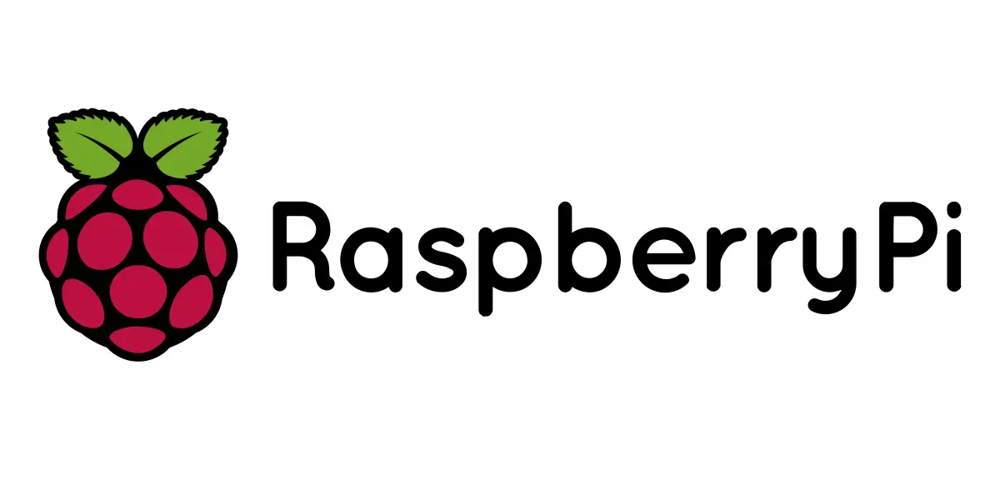

Ce projet consiste en l'installation et la configuration complète d'un environnement de développement sur un Raspberry Pi 400, une machine compacte fonctionnant sous Linux. L'objectif était de maîtriser l'administration système de base et de rendre la machine accessible à distance depuis un autre poste.
Au-delà de la simple installation, ce projet m'a confronté aux réalités du travail en ligne de commande, de la gestion des permissions et de la sécurisation d'un accès réseau.
apt update && apt upgrade# Mise à jour du système sudo apt update && sudo apt upgrade -y # Installation et activation SSH sudo apt install openssh-server sudo systemctl enable ssh sudo systemctl start ssh # Création d'un utilisateur développeur sudo adduser devuser sudo usermod -aG sudo devuser # Configuration du pare-feu sudo ufw allow ssh sudo ufw enable sudo ufw status # Connexion depuis un autre poste ssh devuser@192.168.1.XX
La configuration réseau a été la principale difficulté : obtenir une adresse IP fixe sur le réseau local pour pouvoir se connecter de manière fiable en SSH a nécessité de comprendre le fonctionnement du DHCP et de configurer une IP statique côté routeur.
La gestion des permissions Linux m'a aussi posé des problèmes au début — comprendre la différence entre les droits utilisateur, groupe et autres, et savoir quand utiliser sudo sans compromettre la sécurité, était une courbe d'apprentissage importante.